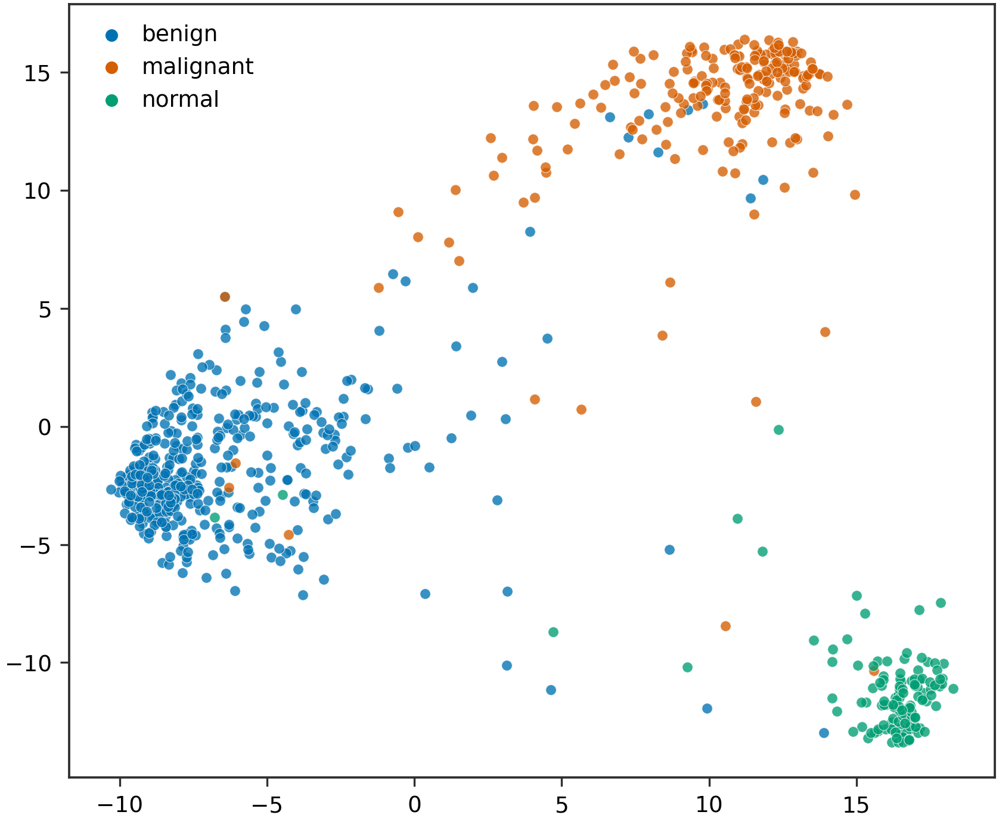
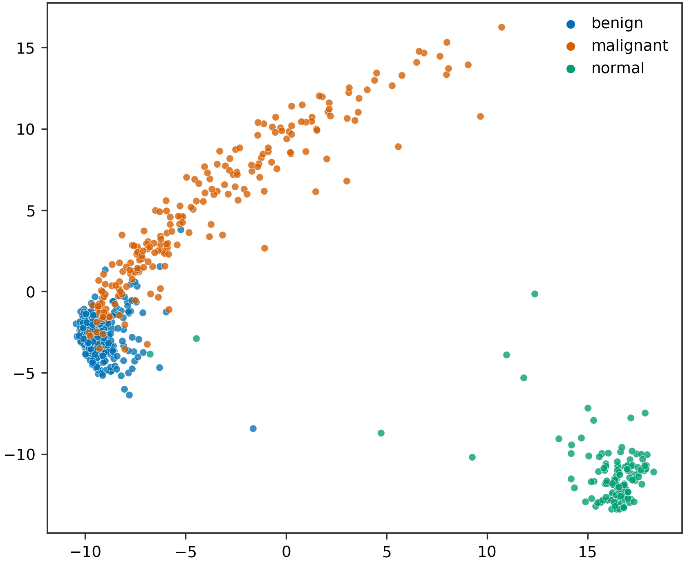
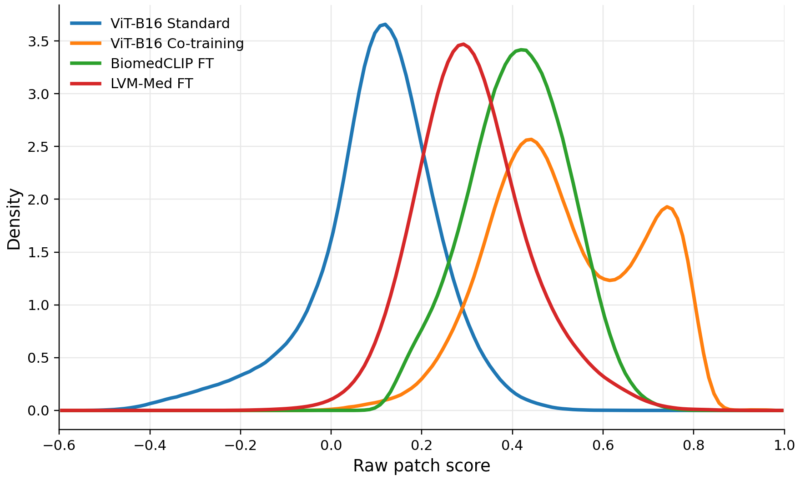

Spatial Collapse in Medical ViTs
Driven by a global class-token objective, ViTs can learn shortcut associations with background textures, scanner artifacts, or anatomical context, instead of localising diagnostic lesions. We call this failure mode spatial collapse: the class token remains predictive, but its discriminative patch evidence is weakly aligned with lesion regions.
Across BUSI, HAM10000, and SIIM-ACR Pneumothorax, a standard ViT-B/16 reaches competitive accuracy (avg. ACC 0.836) but much weaker evidence localization (avg. PIB 0.168) than a convolutional reference (avg. PIB 0.685).

Qualitative comparison of ViT and ResNet-50 evidence localization. From left to right: original image, ground-truth lesion, patch-score heatmap, and top-scoring region.

Patch-score distribution used for evidence probing: discriminative evidence of vanilla ViTs often drifts away from lesion regions.
| Dataset | ViT ACC | ViT PIB | ResNet ACC | ResNet PIB | ΔPIB |
|---|---|---|---|---|---|
| BUSI | 0.888 | 0.071 | 0.862 | 0.690 | +0.619 |
| HAM10000 | 0.830 | 0.393 | 0.867 | 0.954 | +0.561 |
| SIIM-ACR | 0.789 | 0.040 | 0.884 | 0.410 | +0.370 |
| Average | 0.836 | 0.168 | 0.871 | 0.685 | +0.517 |
High classification accuracy does not imply faithful lesion-level evidence alignment.
Datasets
We evaluate on three 2D medical classification datasets with foreground annotations, spanning ultrasound, dermoscopy, and chest X-ray. Image-level labels are used for classification; lesion masks are used only for evidence-localization analysis (unless explicitly used in segmentation co-pretraining).
| Dataset | Modality | Task | # Images | # Classes | Mask |
|---|---|---|---|---|---|
| BUSI | Ultrasound | Breast lesion cls. | 780 | 3 | Lesion |
| HAM10000 | Dermoscopy | Skin lesion cls. | 10,015 | 7 | Lesion |
| SIIM-ACR | X-ray | Pneumothorax cls. | 12,047 | 2 | Pneumothorax |
Structured Supervision Paradigms
We compare three independent forms of structured supervision that introduce spatial or semantic constraints beyond standard classification:
- Graph self-supervision (LVM-Med): topological priors by modeling relations among patches / regions.
- Segmentation co-pretraining: dense pixel-level constraints that encourage lesion-boundary awareness.
- Image-text alignment (BiomedCLIP): cross-modal grounding that links visual patches with clinical language.
All three can alleviate spatial collapse to some extent, but they reshape patch-to-global aggregation in different ways. Empirically, image-text alignment provides the strongest overall grounding, while dense segmentation is particularly useful for small and spatially unstable lesions.
Results
Among the evaluated paradigms, image-text alignment provides the strongest overall evidence grounding: BiomedCLIP fine-tuning raises average PIB from 0.168 (vanilla ViT) to 0.410. Segmentation co-pretraining is especially helpful when lesions are small and spatially unstable (e.g., pneumothorax).
| Model | Method | BUSI ACC / PIB | HAM10000 ACC / PIB | Pneumothorax ACC / PIB | Avg. PIB |
|---|---|---|---|---|---|
| ViT-B/16 | Standard | 0.888 / 0.071 | 0.830 / 0.393 | 0.847 / 0.040 | 0.168 |
| BiomedCLIP | Fine-tuning | 0.888 / 0.385 | 0.843 / 0.768 | 0.829 / 0.076 | 0.410 |
| LVM-Med | Fine-tuning | 0.715 / 0.114 | 0.836 / 0.248 | 0.864 / 0.051 | 0.138 |
| ViT-B/16 | Co-training | 0.897 / 0.128 | 0.862 / 0.268 | 0.856 / 0.121 | 0.172 |

Patch-score heatmaps across methods. Image-text fine-tuning yields the most lesion-covering evidence maps on dermoscopic images.
Why Does Vanilla Classification Fail?
Image-level classification supervises only the final prediction from the global representation, without constraining which patches are aggregated into the class token. A foreground-background probe on BUSI shows that background-only class-token features remain class-separable (silhouette 0.631), while foreground-only features are much weaker (0.250). Shortcut regions can therefore support accurate labels without faithful lesion grounding.

(a) Original

(b) Background-only

(c) Foreground-only
Why Does Structured Supervision Help?
Structured pre-training strengthens coupling between local patch representations and the global diagnostic representation. On pneumothorax-positive samples, vanilla ViT produces weak patch evidence responses (mean 0.099), while structured methods shift the overall score distribution higher and improve foreground-background ranking (segmentation co-training reaches mean AUC 0.697).

Patch evidence score distributions

Foreground-background AUC of patch evidence
Takeaways
- Standard ViT classification can suffer from spatial collapse: accurate labels with poorly grounded lesion evidence.
- Graph, segmentation, and image-text supervision all help, but reshape aggregation differently.
- Image-text alignment gives the strongest overall grounding; dense segmentation is especially useful for small / unstable lesions.
- Medical classifiers should be evaluated not only by accuracy, but also by whether visual evidence aligns with lesion-level medical semantics.